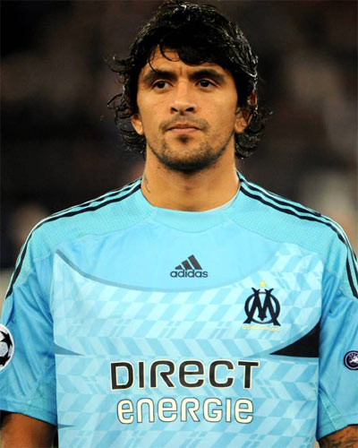

Lucho Gonzalez
footballeur international Argentin.

parcours professionel :
2002-2005: CA River Plate
2005-2009: FC Porto
2009-2012: Olympique de Marseille
2012-2014: FC Porto
2014-2015: Al-Rayaan SC
2015-2016: CA River Plate
2016-2021: Atlético Paranaense
nombre de match joué:
869
nombre de buts:
139